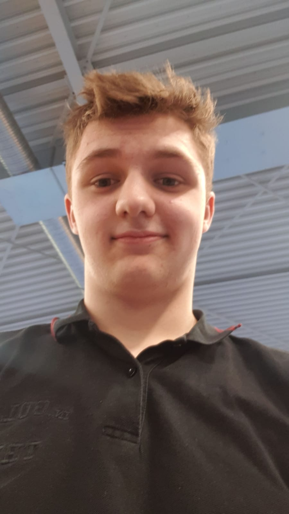
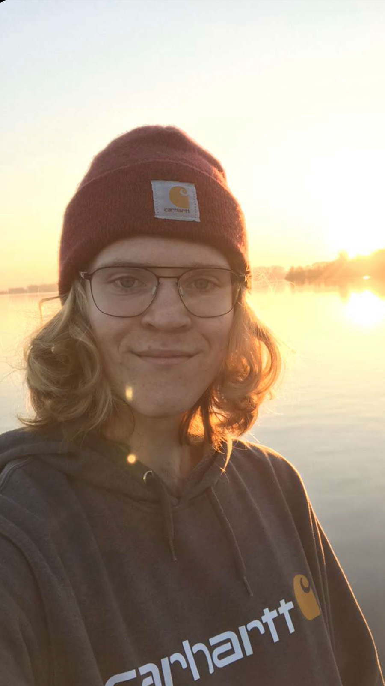

2
Wat is Ma
Ma is een vakschool voor de media. Je hebt de keus uit 14 praktijkgerichte opleidingen waarmee je straks aan de slag kunt in de entertainmentwereld, de game-industrie, een ontwerpbureau, reclamebureau of bijvoorbeeld een bureau voor standbouw. Welke opleiding je ook kiest, je wordt opgeleid tot een professional in het vak van jouw keus.
Tijdens je opleiding doe je mee aan projecten, waarbij je samenwerkt met studenten van andere opleidingen. Professionals in de mediabranche moeten namelijk niet alleen goed zijn in hun eigen vak. Ze moeten ook kunnen samenwerken met mensen met een andere specialisatie.


Quinn Croese
Ik vind het erge leuke school. Waar je goed je vak leert. En echt leert wat je later nodig hebt. Het is een hele open school en dat is fijn je kunt gwn jezelf zijj
Jochem de Wit
Hey! Ik ben Jochem de Wit, 21 jaar en ik kom uit Katwijk. Dit is nu mijn 2e jaar op de opleiding media development aan het Mediacollege Amsterdam. De pauzes en de docenten hier op school zijn fantastisch, en ik sta versteld van wat ik hier afgelopen anderhalf jaar heb geleerd op het gebied van programmeren en project management. Ook vind ik het leuk dat we regelmatig samen moeten werken met mediavormgevers, waardoor de projecten er onwijs goed uit zien. Op het moment verdiep ik me in UI/UX, oftewel je product maken op hoe je zou willen dat de gebruiker jouw product gebruikt. En ik verdiep me in cyber security, omdat ik het onwijs interessant vind om systemen goed te beveiligen en te (pen-) testen.
Maren Porte
Hoi, mijn naam is Maren Porte, ik ben 17 jaar oud, zit op het Mediacollege Amsterdam en doe Audiovisueel.
Ik vind het Mediacollege een erg goede en leuke school, natuurlijk is er altijd ruimte voor verbetering maar overall is het een goede school. Voor mijn opleiding worden er leuke dingen georganiseerd. Laatst zijn we naar het Stedelijk Musuem geweest, en IDFA. Verder vind ik de leraren ook erg leuk en gezellig, en alle leerlingen accepteren elkaar gewoon. Niks is raar, iedereen is wie die is en mag er zijn.
Gericht op de praktijk
De arbeidsmarkt verandert voortdurend. Sommige beroepen verdwijnen; nieuwe beroepen ontstaan. Ma volgt de ontwikkelingen in de mediabranche en speelt daar op in. Met nieuwe opleidingen en aanpassingen van bestaande. De aansluiting van onderwijs en arbeidsmarkt staat beschreven in kwalificatiedossiers met diploma-eisen. Deze dossiers zijn competentiegericht. Dat betekent dat jij je kennis, vaardigheden en beroepshouding in de praktijk moet kunnen toepassen. Je leert dan ook niet alleen bepaalde technieken die belangrijk zijn voor het vak. Maar ook hoe je met klanten en collega’s omgaat en hoe je functioneert in onze maatschappij.
Onderwijsvisie
Ma geeft opleidingsteams alle ruimte om eigen keuzes te maken voor het concept, de planning en de uitvoering van het onderwijs. Op deze manier kan onderwijs ontstaan dat aansluit bij een specifiek deel van de mediabranche en de bijbehorende studenten. Van een filmacteur worden nu eenmaal andere competenties verwacht dan van een geluidstechnicus; datzelfde geldt voor een vormgever en een media- of gamedeveloper.